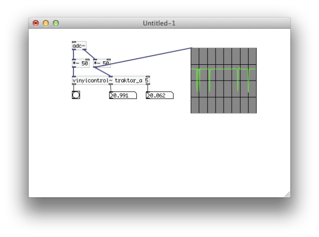

Working with vinylcontrol~ in Pure Data
In the last post I described how to get the vinylcontrol~ external compiled and installed on a Mac. If you are on Linux there is already a 32 bit binary out there for you, and if you are on Windows, good luck. Seriously though it’s not that bad, just read my tutorial on building beatpipe~ using MingGW on Windows.
I had a few issues just getting to square one with vinylcontrol~. The first issue was that I don’t have a phono preamp on the USB audio interface that I’m using (Behringer UCA202). This means that I needed to amplify the signal a little bit to get things working. It turns out that you can’t boost it too much or things stop working. Actually, the pitch output is very consistent, as I think it is just reading the carrier signal that the timecode is using. I think this is a square wave that can be distorted like crazy and still work OK. The issues mostly come with trying to get the position data from vinylcontrol~.
Initially I thought that the position output (the rightmost outlet of the external) wasn’t working at all. It turned out to be a combination of things. The correct vinyl (Traktor/Serato) and also the correct side (A/B) are required, along with the correct signal level in order for the position to work.
Take a look at the following patch to see what I’m talking about:

The pitch value is 1 when the turntable is rotating at exactly 33RPM. Moving the pitch slider up and down on the turntable will cause this value to go up and down by 10% (or 15% if your turntable has a wider pitch range). Scratching or moving the record will cause this value to vary widely. The rate that this value gets updated is influenced by the creation argument. Setting a higher value will cause things to update more slowly and smoothly.
The position value goes from some negative value to 1 roughly, where zero is the “cue” position set either when the needle is first dropped or a bang is sent to the rightmost inlet. This is a little hard to visualize in some cases where the cue point is set very near the end and the needle is moved to the start of the timecode track. Negative values indicate that the needle has been moved before the cue position. The amount is proportional to the length of the cue point to the end of the track, so if there is only 30s from the cue to the end, then putting the needle down 60s before the cue point give a position value of -2. So the value is not -1 to 1, it could be something like -100 to 1. I’m not sure what the limit of its resolution is without looking through the code.
The position stops updating on the runout, and then on the inner grove it goes past 1 and fluctuates. If the cue point is set on the runout track for some reason, then moving the needle back on the record results in a large positive value. All this is a little odd to deal with without a little signal conditioning, and my initial experiments with controlling audio files using this external have shown that the position value is pretty hard to use. I’m currently exploring just using the pitch value for relative control of my patch, which I think will be just fine.